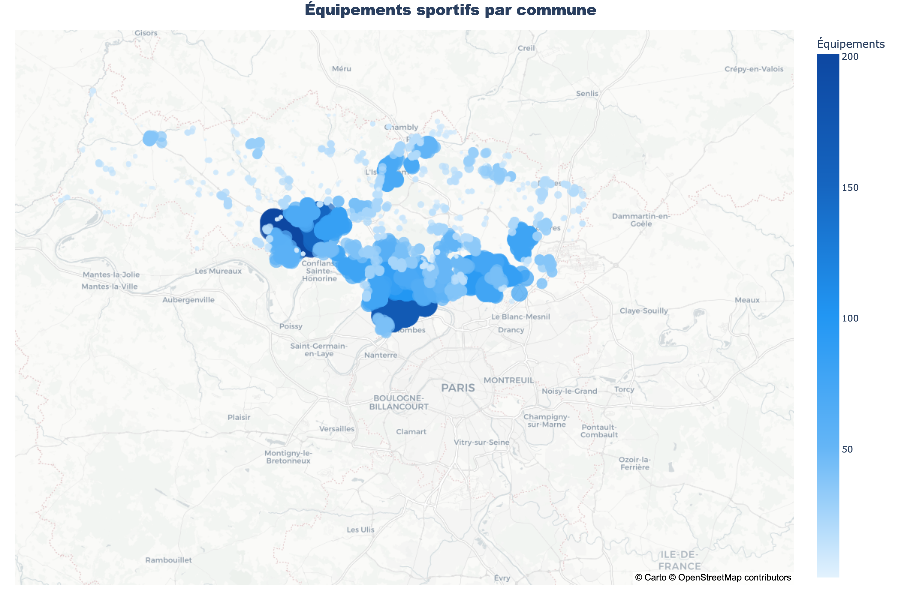
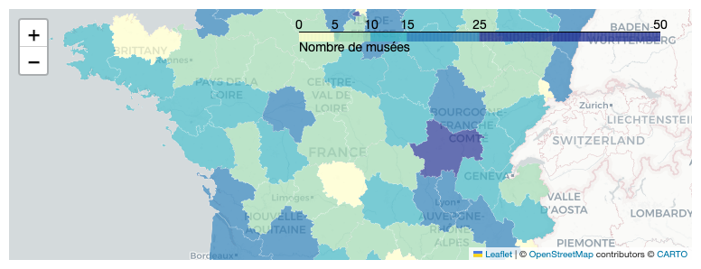

Notebook Reports Gallery
Cartographie de la Température Moyenne des Postes Météo en France

Analyse des Équipements Sportifs dans le Val-d'Oise

Cartographie des Musées de France : Une Exploration Géographique
Analyse Géo-Spatiale : À la recherche du terrain de football parfait dans le Val-d'Oise
Analyse des températures maximales journalières : une plongée dans les données météorologiques françaises
Analyse des Températures Journalières et Anomalies Thermiques en France
Analyse Multidimensionnelle des Chansons de Rap : Complexité, Politique et Vulgarité
Analyse 3D des Chansons de Rap : Exploration de la Complexité Lexicale, du Message Politique et de la Vulgarité
Analyse de l'Évolution de la Vulgarité dans les Chansons par Genre Musical
üìä Validations Transilien : d√©crypter la routine francilienne au 2·µâ trimestre 2024
üî• Au-del√† de la tol√©rance : cartographier les exc√®s de vitesse extr√™mes en France
Analyse des Propriétés de l'État : Une Carte Choropleth pour Comprendre la Répartition Départementale
Selected Notebooks
Copy List